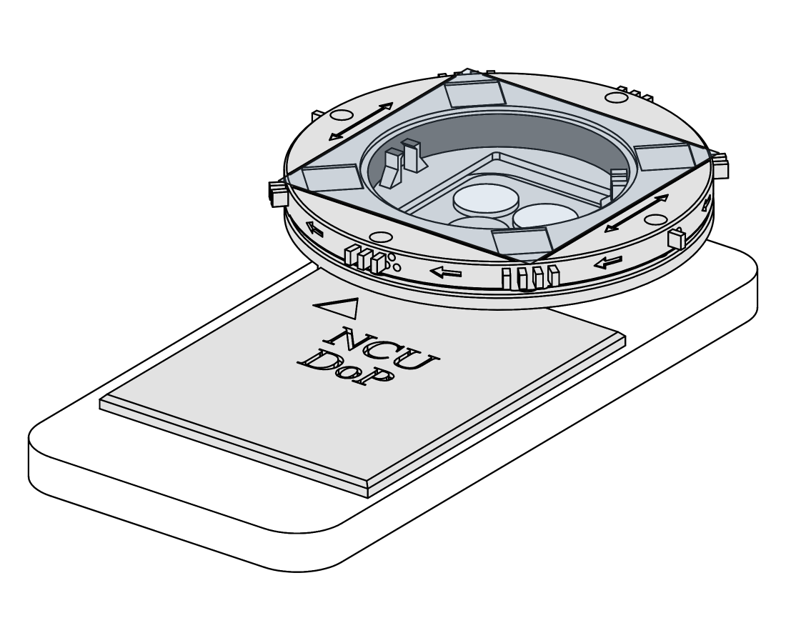

Chapter contents
User manual
Start here
Getting started
1. Welcome and compatibility
S012Cam turns your iPhone into a polarization camera. It takes four photos through a linear polarizer at 0°, 45°, 90° and 135°. The result shows the degree and angle of linear polarization. Try reflections on glass, blue sky or clear plastic in front of an LCD screen.
S012Cam works on iPhones with iOS 15.6 or later. It was developed and tested on iPhone 16 Pro. Older iPhones may take longer to calculate a measurement.
Every model shows a 1× camera button. Models with an ultra wide camera also show 0.5×. Models with a telephoto camera show 2×, 3× or 5×. For example, iPhone 12 Pro shows 2×; 13 Pro and 14 Pro show 3×; 15 Pro Max and 16 Pro show 5×. Cameras the iPhone does not have are not shown.
You can use the S012Cam Polarizer Rotator accessory (Fig. 1) or hold a hand-held linear polarizer in front of the lens and turn it through four angles. With a hand-held polarizer, mount or secure the iPhone and use Timer. Estimated angles, tilt and position changes affect the result. Do not use the values from this method as a quantitative reference. See section 8.


2. Before you start
Keep the 15 small, strong magnets and the MagSafe magnet sticker away from children, pets, pacemakers and other medical implants. Swallowed magnets are dangerous.
Keep the round magnets in one stack. Insert them without flipping them. Cut printing supports away from your hands. Press the bearing only on its outer ring. Keep dust and sand out of it.
Hold the polarizer by its edges. Leave its protective film on while finding its axis. Remove the film after fitting the polarizer and before taking a measurement.
You will need small pliers, a utility knife, a soft cloth, a fine marker, and a blunt pin or toothpick. Work on a clean table.
8. Take a four-angle set
First choose how to support the iPhone, then choose how photos 2–4 are triggered. These are separate choices.
| Setup | Suggested capture mode | Calculation |
|---|---|---|
| Handheld iPhone + Rotator | Gyro; Timer is also available | Align and Calculate. |
| Tripod or secured iPhone + Rotator | Timer is convenient; Gyro is also available | Calculate Without Aligning if the phone and scene stayed fixed. |
| Secured iPhone + hand-held polarizer | Timer | Calculate Without Aligning if fixed. Hand-estimated angles are not a quantitative reference. |